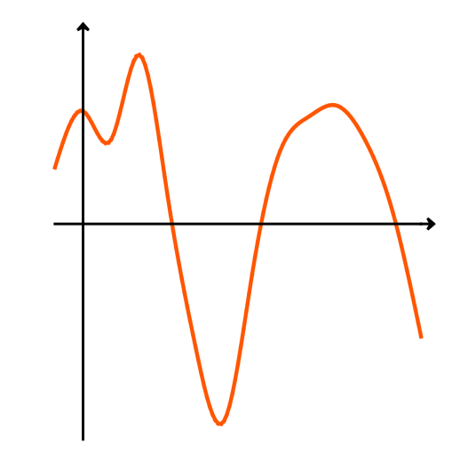
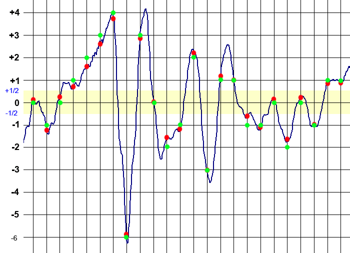

Signale
Was sind Signale?
Ein Signal bezeichnet in der Nachrichten- und Informationstechnik
den zeitlichen Verlauf einer physikalischen Größe, der eine Information zugeordnet
wird.
Die in der Definition erwähnte physikalische Größe kann von unterschiedlicher Art sein.
Zum Beispiel der Schalldruck von Sprache oder die elektrische Spannung an einem Lautsprecher oder Mikrophon.
Bei der Nachrichtenübertragung hat man es meistens mit elektrischen oder elektromagnetischen Signalen zu tun (auch Licht ist eine elektromagnetische Welle). Andere Arten von Signalen werden vor der Übertragung zumeist in elektrische Signale umgewandelt.
Mathematisch kann ein Signal als eine Funktion f(t) gesehen werden, die zu jedem Zeitpunkt t den Wert der Messgröße definiert.
Signal-Kategorien
Die in der Nachrichtentechnik üblichen Signale können grundsätzlich in zwei Kategorien eingeteilt werden:
- Analoge Signale
- Digitale Signale
Analoge Signale

Verlauf eines analogen Signals
Analoge Signale oder Analogsignale sind:
- Wert-kontinuierlich
- Zeit-kontinuierlich
Wert-kontinuierliche Größen besitzen beliebig viele Zwischenwerte.
Eine Zeit-kontinuierliche Größe ist zu jedem beliebigen Zeitpunkt kontinuierlich messbar.
Analoge Signale sind in der Nachrichtentechnik gar nicht so selten anzutreffen, z.B. bei der Übertragung von Video oder Audio. Meistens werden diese jedoch vor der Übertragung digitalisiert und beim Empfänger wieder in ein mit dem Ausgangssignal möglichst identisches Analogsignal umgewandelt. Im Prinzip sind auch die auf dem Übertragungskanal gesendeten Signale analog.
Ein Analoges Signal kann mathematisch als reelle Funktion x(t) gesehen werden.
Digitale Signale

Verlauf eines digitalen Signals (analoges Signal nach Abtastung und Quantisierung)
Digitale Signale sind:
- Wert-diskret
- Zeit-diskret
Wert-diskrete oder wertdiskrete Größen besitzen nur endlich viele Zwischenwerte.
Ein Zeit-diskretes oder zeitdiskretes Signal ist nur zu bestimmten Zeitpunkten definiert. Das heißt jedoch nicht, dass das Signal zu anderen Zeitpunkten nicht existiert. Allerdings ergeben sich zu diesen Zeitpunkten keine sinnvollen Aussagen über die Information, die das Signal transportiert.
Digitale Signale können aus analogen Signalen durch Abtastung (Sampling) und Quantisierung gewonnen werden.
Ein Digitales Signal kann mathematisch als Zahlenfolge x[n] betrachtet werden. Insbesondere kann die Folge ganzzahlig (Integerzahlen) sein, da die Messgröße, nur endlich viele Werte hat und diese durch eine geeignete Transformation in Ganzzahlen überführt werden kann.
Vorteile digitaler Signale gegenüber analogen Signalen
Die allgegenwärtige Digitalisierung der analogen Welt findet nicht grundlos statt. Digitale Daten und Signale haben gegenüber den analogen zahlreiche Vorteile. Die Leistungsfähigkeit der Prozessoren steigt stetig und durch Massenfertigung sinken die Preise. Dadurch tritt der Nachteil der aufwändigen und kostenintensiven AD-Wandlung in den Hintergrund. Auch die rechenintensive Verarbeitung und Speicherung von digitalen Daten sind mittlerweile ohne große und kostenintensive technische Klimmzüge in Echtzeit möglich.
Vorteile digitaler Signale und Daten sind:
- Deutlich kleinere Datenmengen als analoge Signale.
- Da die Datenmenge komprimiert wird, kann bei der Signalübertragung Bandbreite effektiv eingespart werden.
- Digitale Signale können rekonstruiert werden. Solange der Rauschanteil unter einer gewissen Grenze bleibt kann ein digitales Signal beliebig oft verstärkt und so über beliebig lange Strecken verlustfrei übertragen werden.
- Durch die Rekonstruktionsfähigkeit digitaler Signale kann die Sendeleistung minimiert werden.
- Die Signaleigenschaften können durch Rechenoperationen fast beliebig manipuliert werden. Somit werden z.B. digitale Filter möglich, die auf analogem Wege nicht realisierbar werden.